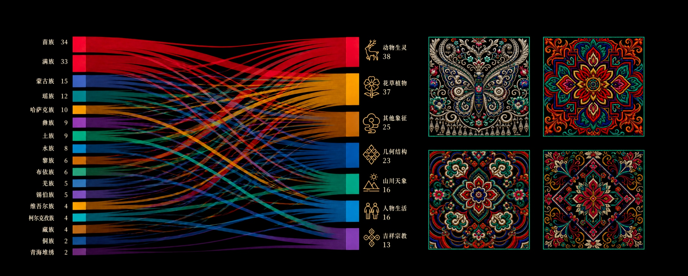
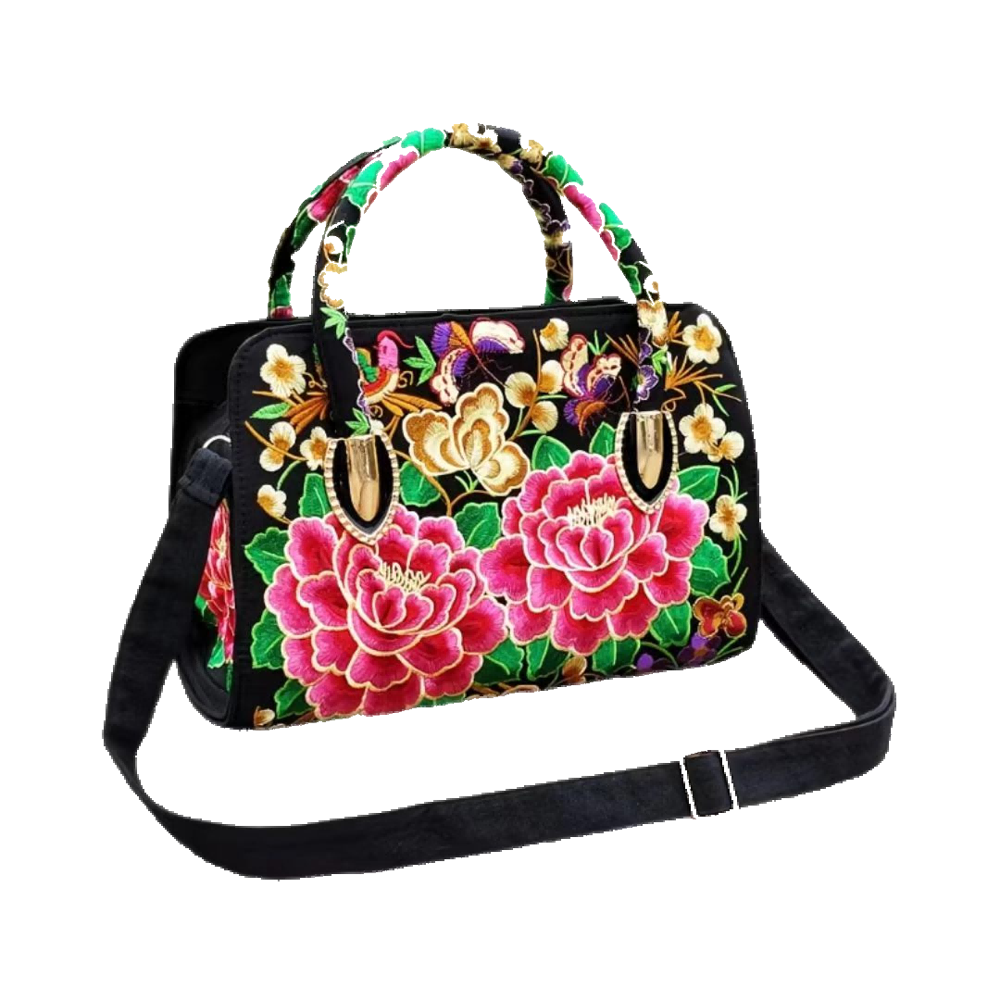
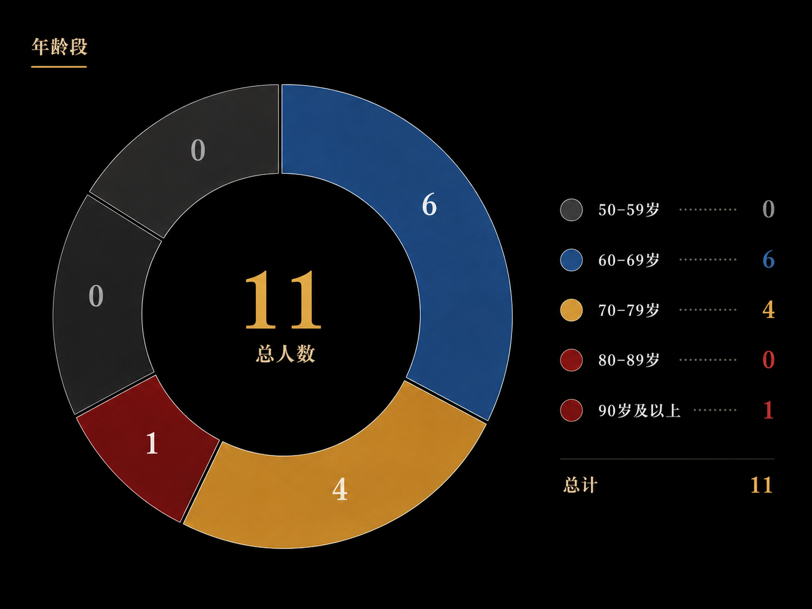
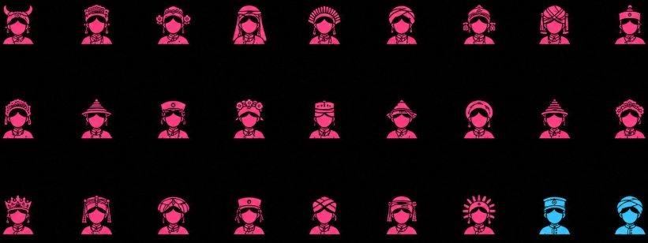

种下石榴籽
开出团结花
一针一线，怎样绣进共同体？
一针一线，怎样绣进共同体？
一根丝线，走了几千年。
马王堆汉墓打开时，泥土封存了两千多年的丝织品上，针脚依然清晰。那些被时间覆盖的纹样里，藏着已知的这门手艺最早的足迹。
苗寨的木楼里，绣娘坐在门槛上，指尖推针、抽线，线在布面上游弋。龙纹、凤羽、鱼鳞、花瓣，一个一个从她手底生长出来；彝家的火塘边，又是另一种针脚。羊角纹、火镰纹、几何纹在衣襟上排列开，挑花针起落之间，纹样一格一格铺满整条袖口；水族的绣娘把马尾捻成芯线，沿着纹样轮廓一圈一圈盘绕。线贴着线，密密匝匝，制成的背带厚实坚挺，能托住一个孩子的重量；土族盘绣，两根同色线在指尖配合。一针盘，一针固定，像两个并肩行走的人……法轮、太极、五瓣梅，在腰带和袖口上缓缓转出。
一颗石榴籽，从这一针开始。

苗绣的龙、凤、鱼鸟、花草；彝绣的羊角纹、火镰纹、几何纹；水族马尾绣的盘绕；土族盘绣的法轮、太极、五瓣梅，各有各的形状。
这些针法在各自的山寨和村落里绵延了数百年。一条河流的上游和下游，隔着几座山的两个寨子，纹样各具特色，每一根都有自己的走向，每一门都是一粒饱满的籽实，裹着独特的基因，长在自己的枝头。
2023年国家级非遗保护单位名单中，明确标注少数民族的刺绣及相关项目共有：41条项目—地区—保护单位记录；对应34个项目标准名称；关联16个少数民族；分布在14个省级地区。
要给这些散落山野的籽实留下一份完整的档案，并不容易。口传心授的手艺，只活在指尖上，难以留在纸面上。直到国家级非遗名录和保护单位制度建立，那些散落在山川之间的针线，才开始有了可以查找的坐标。
打开这张地图，我们得以窥见籽实的分布。这些数字背后，是苗寨、彝山、羌寨、土族村落和锡伯族聚居地各自独立生长出来的针法体系。
然后，一些事情开始改变。
风把籽实吹向不同的方向，有些落进了陌生的土壤。带着纹样的人，开始走向彼此。
乌鲁木齐的一场研讨会，5名专家和20多名刺绣传承人围坐在一起。桌上铺开的不是论文，是绣片。苗绣的龙纹和维吾尔族刺绣的花卉并排放着，同一条根系上结出的籽实，第一次看见彼此的模样。
湖南湘绣进入吐鲁番展销空间那天，空气里的湿度不一样，看的人目光也不一样。
云南楚雄的349件彝绣产品抵达福建莆田，妈祖庙的香火缭绕里，一枚羊角纹的绣片第一次被海风拂过。
19个省市 → 乌鲁木齐。5名专家和20余名纺织刺绣代表性传承人，共同讨论传统刺绣如何融入现代生活。
湖南 → 新疆吐鲁番。吐鲁番刺绣、花毡等本地非遗产品，与湘绣、花瑶挑花、土家族织锦等湖南非遗产品进入同一展销空间。
云南楚雄 → 福建莆田。楚雄彝绣作为首个省外受邀参展项目，在世界妈祖文化论坛主会场开设专展，349件彝绣产品集中亮相。
2024年公布的国家级非遗生产性保护示范基地中，与少数民族刺绣和织绣直接相关的机构共有：10家；分布在7个省级地区；涉及6个民族项目群。
纹样相遇之后，承载它们的织物也开始松动。曾经牢牢固定在衣襟、头帕和背被上的针脚，开始寻找新的落点。一粒籽实要扎根，需要的不只是相遇，还需要持续的水分、温度和可以依附的支架。
制度开始介入。2024年，国家级非遗生产性保护示范基地中，与少数民族刺绣和织绣直接相关的机构共10家，分布在7个省，涉及6个民族项目群。黎族有3家基地，满族和苗族各2家。保护不再只是记录和展示，而是试着把刺绣放进生产链条里，让它自己产生活下去的动力。
支架搭起来了，接下来要看根系能不能自己扎深。

传统载体包括苗绣的盛装、头帕和背被；彝绣的衣襟、腰带和披风；羌绣的围腰、衣领和鞋面；水族马尾绣的背带和绣带；土族盘绣的服饰、腰带和袖口；锡伯族刺绣的烟口袋和生活用品。
当代产品则包括手袋、双肩包、靠垫、桌旗、耳饰、胸针和手机挂件。
载体变了。一件苗绣盛装，原本是一个苗族女性一生最重要的仪式性物品，从少女时期开始绣，绣到出嫁那一天穿上。它的价值不按工时计算，因为工时是一生。但当纹样被缝到手袋、靠垫、手机挂件上，它被纳入了另一种计算方式——市场。籽实破壳，枝条开始伸向陌生的方向。
手工挂件5到20元，机绣包袋约100到200元，手绣作品600到1000元以上。
我们在云南石林找到一位撒尼彝族刺绣传承人。她的手边，同一粒籽实长出的枝条，结着三种完全不同的果实。手工挂件5到20元，机绣包袋约100到200元，手绣作品600到1000元以上。机器把价格压下来，让更多人能把撒尼纹样带回家，枝条伸进更多窗口。手工则保留着机器做不出的东西——针脚的深浅、色线的过渡、一个人在一个下午的全部注意力。她说，机器可以满足不同层次的需求，但手工的东西不能丢。
一根枝条伸向远方，另一根枝条守住土壤。一棵植物要长得健康，两者缺一不可。


产业在扩张，枝条在生长，传承人名单在更新。第五、六批国家级代表性传承人中，少数民族刺绣新增27条记录。
然而，在其中公开可查记录的11位少数民族刺绣传承人中，到2026年，他们的年龄都来到了60以上。60岁以下，一个都没有。名录新增的27个人里，25位是女性。
身体不会永远等下去。名单的增加，不完全等于传承的持续——它没有回答：这些传承人身后，有没有年轻人跟着学？订单是稳定还是偶然？学徒里有几个人能完整掌握全部工序？
绣好一背篓作品，背到昆明、北京售卖。
开始在昆明世博会等场景销售刺绣。
家庭刺绣经营主体正式成立。
夫妻共同设计产品，去国内外展会。
女儿经营网店，学习直播。
上一代：绣好一背篓作品，背到昆明、北京售卖；1999年前后：家人开始在昆明世博会等场景销售刺绣；约2014年：家庭刺绣经营主体正式成立；这一代：夫妻共同设计产品，并参加国内外展会；下一代：女儿经营网店《遗忘的部落》；现在：传承人开始跟随当地助农团队学习直播。
石林的上一辈绣好一背篓作品，背到昆明、北京去卖。1999年前后，他们开始在昆明世博会上摆摊。2014年前后，家庭经营主体正式成立。这一代，夫妻俩一起设计产品，去国内外的展会。下一代，女儿经营网店。现在，她自己开始跟着助农团队学习直播。一根线的传播半径，从一只背篓，伸展到展会、网店和手机屏幕。
但会绣，和愿意把刺绣当作长期职业是两个截然不同的事。这之间的缝隙，是这粒籽实能不能在下一季发出新芽的关键。下一代人会不会坐到绣绷前面？答案不在名单里，在订单里，在收入里，在每一针被市场尊重的价格里。石榴籽要一粒一粒地种下去，花才能一季一季地开。
我们以“‘民族’*‘刺绣’”为关键词，检索了中国知网收录的相关论文。筛选CSSCI和北大核心期刊，按相关度排序，截取前200篇，提取关键词绘制成共现矩阵。
矩阵显示，在学术讨论中，不同主题之间的关联，主要发生在少数几对固定搭配之间。比如讨论苗族刺绣时，“苗族”和“苗族刺绣”总是同时出现，讨论纹样时，“纹样”和“艺术特征”经常一起被提及。但除此之外，大量主题之间的连线并不紧密——这意味着在学术研究中，不同方向之间的对话还不够多。研究刺绣图案的学者较少引用产业经济的数据，讨论乡村振兴的文章也较少回到纹样本体的知识上去。目前的研究更像一条条独立的跑道，还没有形成一张彼此交织的网络。只有让不同跑道之间产生更多的交叉——让纹样的研究者也关心市场，让产业的讨论回到工艺本身，才能更好推动民族刺绣发展，让文化之花结成致富的产业之果。
2026年3月12日，《中华人民共和国民族团结进步促进法》通过，7月1日起施行。法律写明了保护、转化、教育、产业和传播的框架，为之前走过的每一步提供了制度坐标。
但法律不会替人穿针。
针扎进布里，线跟在后面。
这些年，站在柜台前的人变了。从前是背着背篓的绣娘卖给同村的邻居、邻寨的亲戚。后来是游客停下来，拿起一枚手机挂件，翻过来看针脚。再后来，一个从来没有到过云南的年轻女孩，在网店里下单了一只彝绣手袋，她不一定知道羊角纹的含义，但她觉得好看。
这种“觉得好看”，本身就有分量。一个纹样被另一片土壤里的人看见、喜欢、花钱买下来、用在自己的生活里。正是这种欣赏，让一针一线有了继续走下去的理由。
种下石榴籽，是每一根线都记得自己从哪里出发——苗寨的木楼、彝家的火塘、水族的竹楼、土族的院落。一粒籽实有一粒籽实的来处，一种针法有一种针法的基因。而开出团结花，不是把所有纹样染成同一种颜色，是不同针法绣出的花瓣长在同一根枝条上，苗族的龙、彝族的火镰、水族的马尾、锡伯族的牡丹，各有各的形状，却被同一片阳光照着，被同一群人不分民族地喜欢着。
它需要一些具体的条件：共尊，共赏，共享。也需要一代一代人，坐在绣绷前，接过下一针。
石榴籽各有形状。团结花，也不只有一种颜色。